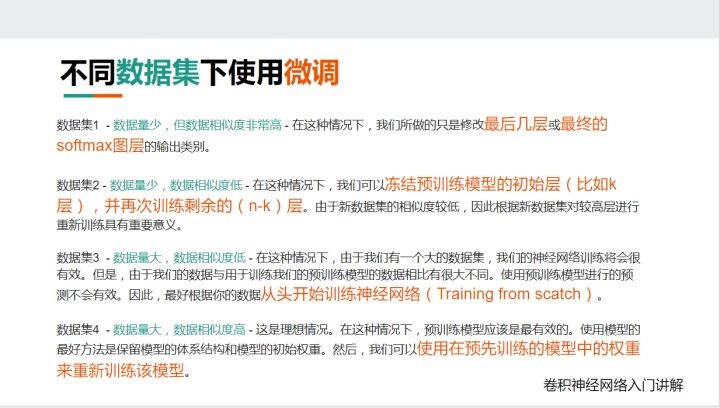

opencv
2.标注工具 https://github.com/tzutalin/labelImg
https://www.kancloud.cn/aollo/aolloopencv/269602
open-cv的基本参数
以下是opencv-python可以获取视频的相关信息，可以通过从0开始的序号获取
CV_CAP_PROP_POS_MSEC 视频文件的当前位置（以毫秒为单位）或视频捕获时间戳。
CV_CAP_PROP_POS_FRAMES 接下来要解码/捕获的帧的基于0的索引。
CV_CAP_PROP_POS_AVI_RATIO 视频文件的相对位置：0 - 电影的开始，1 - 电影的结尾。
CV_CAP_PROP_FRAME_WIDTH 视频流中帧的宽度。
CV_CAP_PROP_FRAME_HEIGHT 视频流中帧的高度。
CV_CAP_PROP_FPS 帧速率。
CV_CAP_PROP_FOURCC 编解码器的4字符代码。
CV_CAP_PROP_FRAME_COUNT 视频文件中的帧数。
CV_CAP_PROP_FORMAT 返回的Mat对象的格式 retrieve() 。
CV_CAP_PROP_MODE 指示当前捕获模式的特定于后端的值。
CV_CAP_PROP_BRIGHTNESS 图像的亮度（仅适用于相机）。
CV_CAP_PROP_CONTRAST 图像对比度（仅适用于相机）。
CV_CAP_PROP_SATURATION 图像的饱和度（仅适用于相机）。
CV_CAP_PROP_HUE 图像的色调（仅适用于相机）。
CV_CAP_PROP_GAIN 图像的增益（仅适用于相机）。
CV_CAP_PROP_EXPOSURE 曝光（仅适用于相机）。
CV_CAP_PROP_CONVERT_RGB 布尔标志，指示是否应将图像转换为RGB。
CV_CAP_PROP_WHITE_BALANCE_U 白平衡设置的U值（注意：目前仅支持DC1394 v 2.x后端）
CV_CAP_PROP_WHITE_BALANCE_V 白平衡设置的V值（注意：目前仅支持DC1394 v 2.x后端）
CV_CAP_PROP_RECTIFICATION 立体摄像机的整流标志（注意：目前仅支持DC1394 v 2.x后端）
CV_CAP_PROP_ISO_SPEED摄像机 的ISO速度（注意：目前仅支持DC1394 v 2.x后端）
CV_CAP_PROP_BUFFERSIZE 存储在内部缓冲存储器中的帧数（注意：目前仅支持DC1394 v 2.x后端）
训练数据少-
生成更多数据 https://juejin.im/post/5d887be951882509334fa199
数据量少的方法 https://zhuanlan.zhihu.com/p/50547038
1.迁移学习
（1）微调 https://zhuanlan.zhihu.com/p/35890660
利用已经训练好的模型和参数作为初始参数，再训模型

（2）特征提取（Feature Extraction） +特征融合（feature fusion）+ xgboost
模型结构不变，将最后输出部分的全连接特征取出
https://github.com/cameronfabbri/Compute-Features
过拟合
http://www.mashangxue123.com/tensorflow/tf2-tutorials-keras-overfit_and_underfit.html
- 权重正则化L1,L2
- dropout
TF2.0
https://tensorflow.google.cn/tutorials/images/classification
一个简单的方法是创建一个新的 Model 来输出你所感兴趣的层：
from keras.models import Model
model = ... # 创建原始模型
layer_name = 'my_layer'
intermediate_layer_model = Model(inputs=model.input,
outputs=model.get_layer(layer_name).output)
intermediate_output = intermediate_layer_model.predict(data)
或者，你也可以构建一个 Keras 函数，该函数将在给定输入的情况下返回某个层的输出，例如：
from keras import backend as K
get_3rd_layer_output = K.function([model.layers[0].input],
[model.layers[3].output])
layer_output = get_3rd_layer_output([x])[0]
工具篇
工欲善其事必先利其器
主流的深度学习框架有
| tool | 公司 | 特性 |
|---|---|---|
| tensorflow | ||
| pytorch | ||
| keras | ||
| caffe | 伯克利 | |
| paddlepaddle | 百度 | |
| mxnet |
Keras 是基于tensorflow或者Theano(已不维护)封装的高阶接口，tensorflow2.0中现在已经包含Keras
1. Tensorflow
TF-Slim、TFLearn、Keras和TensorLayer
TF-Slim、TFLearn、Keras和TensorLayer都是尝试简化TensorFlow/Theano的工具，是对TensorFlow/Theano的高层封装，API实现更加的工程化
tensorflow2.0 已经将这些合并整理了，官方推荐的是keras的api
https://tensorflow.google.cn/tutorials/images/transfer_learning
https://github.com/balancap/SSD-Tensorflow
2. tensorhub
官方地址 https://hub.tensorflow.google.cn/ 类似于dockerhub，汇集了各种分享的模型，可供下载使用。
主要包括 tezt embeddings, image classification models and more
安装
pip install --upgrade tensorflow-hub
比如图像分类相关的 https://hub.tensorflow.google.cn/google/collections/image/1
google后来提取的 EfficientNet, 调整模型的深度，宽度等参数。https://hub.tensorflow.google.cn/google/collections/efficientnet/1
1.对新样本predict
classifier_url ="https://tfhub.dev/google/tf2-preview/mobilenet_v2/classification/2" #@param {type:"string"}
IMAGE_SHAPE = (224, 224)
classifier = tf.keras.Sequential([
hub.KerasLayer(classifier_url, input_shape=IMAGE_SHAPE+(3,))
])
# 新样本
grace_hopper = tf.keras.utils.get_file('image.jpg','https://storage.googleapis.com/download.tensorflow.org/example_images/grace_hopper.jpg')
grace_hopper = Image.open(grace_hopper).resize(IMAGE_SHAPE)
grace_hopper = np.array(grace_hopper)/255.0
result = classifier.predict(grace_hopper[np.newaxis, ...])
result.shape
2.simple迁移学习
image_generator = tf.keras.preprocessing.image.ImageDataGenerator(rescale=1/255)
image_data = image_generator.flow_from_directory(str(data_root), target_size=IMAGE_SHAPE)
## 下载不包含top classification layer的model
feature_extractor_url = "https://tfhub.dev/google/tf2-preview/mobilenet_v2/feature_vector/2" #@param {type:"string"}
feature_extractor_layer = hub.KerasLayer(feature_extractor_url,
trainable= False,
input_shape=(224,224,3))
model = tf.keras.Sequential([
feature_extractor_layer,
layers.Dense(image_data.num_classes)
])
model.summary()
# 剩下的和正常的模型训练过程一样
其command line 工具 https://github.com/tensorflow/hub/tree/master/tensorflow_hub/tools/make_image_classifier
make_image_classifier \
--image_dir my_image_dir \
--tfhub_module https://tfhub.dev/google/tf2-preview/mobilenet_v2/feature_vector/4 \
--image_size 224 \
--saved_model_dir my_dir/new_model \
--labels_output_file class_labels.txt \
--tflite_output_file new_mobile_model.tflite
综述
首先看下cv方面的综述，对整个技术发展过程有个大致了解
https://github.com/weiaicunzai/awesome-image-classification (中文 https://mp.weixin.qq.com/s?__biz=MzIwOTc2MTUyMg==&mid=2247487400&idx=1&sn=cb4dd3e95cd12c813bfcb7ae6e62d69c&chksm=976faa35a01823230524bec5cb4ede73b880d42eaf2fe86b5878108df444d02ba1acd613df1b&mpshare=1&scene=1&srcid=0221VLUJG5gsMr5QzU7VNtBZ&sharer_sharetime=1582247950940&sharer_shareid=39affd95034dc485004147e1f2365064%23rd)
预处理
- 均值
- 数据增强：缩放、旋转、随机RGB颜色、亮度变换等
参考资料
Copyright © 2015 Powered by MWeb, Theme used GitHub CSS.